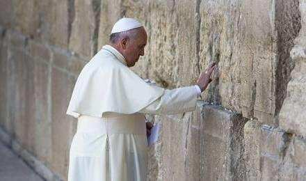
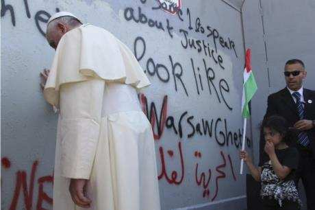

Le Pape François touche pieusement le Mur de la main droite
Source: Benny Tocker, “Rabbi asks pope to recognize Israel as Jewish”, Arutz7 (21.01.2016) 1. Traduction française: Menahem R. Macina
À la tête d’une délégation de rabbins israéliens présents lors de la première visite historique du pape François à la Grande synagogue de Rome, le dimanche 17 janvier 2016, Rabbi Dr Ratzon Arusi a mis le pape dans l’embarras, durant sa visite destinée à manifester aux Juifs le soutien de l'Église catholique. Le rabbin a rapporté à Arutz Sheva qu’au cours de la visite, il s’est adressé au pape et lui a demandé de déclarer que l'Église reconnaît l'État d'Israël en tant qu’État du peuple juif, mais le pape, visiblement gêné, a tout simplement réagi par le silence. Selon Rabbi Arusi, bien que l'Église catholique ait opéré un certain revirement ces dernières années en ce qui concerne ses relations avec le peuple juif, il reste encore beaucoup à faire.
-« L'Église ne reconnaît pas l'État d'Israël comme l'État du peuple juif, elle parle de la Terre Sainte, mais pas de l'État d'Israël », a-t-il dit. -« C’est pourquoi, au cours de la rencontre du pape avec les rabbins après la cérémonie publique, je me suis adressé à lui pour lui dire que nous apprécions ses paroles contre l'antisémitisme, mais qu’aujourd'hui, il y a un antisémitisme d’un nouveau genre et très cruel, qui prospère sur le terreau du conflit israélo- palestinien. »
Le rabbin a demandé au pape d'être « le Balfour de l'Église catholique »:
-« Puisque la terre d'Israël est la Terre Sainte et que l’Église reconnaît notre droit d’aînesse, elle devrait déclarer que l'État d'Israël est l'État du peuple juif, sur la base de la Bible, sans diminuer les droits des Palestiniens à un État ».
Et Rabbi Arusi d’avouer:
-« Le pape a été très embarrassé par ma requête, car on ne lui avait jamais dit cela franchement; ensuite il a souri mais n’a rien dit. Je pense que le temps est venu pour [l’Église] de reconnaître vraiment l'État d'Israël en tant qu’État du peuple juif. »
En fait, le Vatican a montré des tendances qui vont dans un sens diamétralement opposé au soutien de l'État juif d'Israël. Au début de ce mois, est entré en vigueur le premier accord historique entre le Vatican et la "Palestine", qui reconnaît l'Autorité palestinienne (AP) comme ayant autorité à Jérusalem-Est, mais qui fait silence sur le fait que les chrétiens ont été systématiquement persécutés sous le régime de l’AP. En mai 2015, le Vatican a déclaré qu'il canoniserait des « saints palestiniens », et lors de la visite du pape en Israël, en mai 2014, il a fait un arrêt inattendu près de la barrière de sécurité entre Jérusalem et Bethléem de Judée, pour prier devant un tronçon du mur portant l’inscription suivante peinte à l’aérosol: « Pape, nous avons besoin que quelqu'un parle de justice. Bethléem est comme le ghetto de Varsovie. Palestine libre » 2.
Rabbi Arusi a affirmé que malgré les longues périodes de persécutions des Juifs par l'Église catholique, il est important que le dialogue continue. Et d’ajouter:
-« Il est clair que, tant sur le plan religieux que sur le plan personnel, il est très difficile de participer à des événements comme ceux-ci (c’est-à-dire la visite du pape – Note de l’éditeur), en raison de l’ampleur de la division entre l'Église catholique et le peuple d'Israël durant tant de générations. Nous poursuivons ces rencontres et sommes heureux d'avoir entendu dire récemment que les papes affirment que la nation d'Israël est le peuple premier-né (de Dieu). Jadis nous avons été proscrits du fait de leur répugnance [à notre égard], aujourd'hui, ils nous disent que nous sommes leurs frères aînés 3 et qu’ils apprennent de nous les valeurs éthiques; nul doute que ce soit une chose importante en cette époque d'antisémitisme fanatique. »
Rabbi Arusi fait encore remarquer:
-« Le pape actuel […] s’oppose à la conversion des juifs, (ce qui) constitue une déclaration très importante. -Je sais qu'il y des gens qui s'opposent à ces rencontres, mais il est bon que le public sache qu’elles ont lieu, et qu’on entende une voix raisonnable qui, avec l'aide de Dieu, apportera un changement. »
© Arutz 7 (Israel National News)
Mis en ligne sur le site Academia.edu, le 9 juin 2016
1 Cet article, publié en début d’année, m’avait échappé. Malgré le décalage chronologique, il m’a paru important de le traduire. En effet, son contenu est instructif, tant pour celles et ceux qui travaillent à une meilleure connaissance mutuelle des Juifs et des Chrétiens, que pour celles et ceux qui y sont favorables sans pouvoir y apporter leur concours, faute d’expertise. Il est clair qu’il s’agit, de la part du Rabbin Arusi, d’une démarche idéaliste, voire ‘donquichottesque’, en ce sens que ce n’est pas ainsi que se traitent les choses dans l’Église, surtout s’agissant d’un sujet lourd d’implications politiques explosives. Néanmoins, elle a le mérite de révéler, en creux, le nœud du problème, à savoir: le refus, viscéral et quasi sacré, qu’opposeront toujours les peuples arabes à une présence souveraine du peuple juif sur un sol qu’ils considèrent comme éternellement islamique. Il s’agit là, me semble-t-il, d’un conflit d’autant plus inexpiable que ses racines sont théologiques. J’y reviendrai ailleurs. ↩
2 Voir la vidéo intitulée « Arrêt du Pape François devant une portion du Mur de séparation ». Bien des juifs religieux ont dû éprouver un serrement de coeur en voyant ce pape poser sa main sur cette portion du mur de séparation, dans un geste équivalent à celui qu’il avait eu au Mur Occidental (Kotel). ↩
3 Allusion aux propos suivant du pape François lors de sa venue en Terre Sainte en janvier 2016: « Avec cette visite, je m’inscris dans la lignée de mes prédécesseurs. Le Pape Jean-Paul II vint ici il y a trente ans, le 13 avril 1986; et le Pape Benoît XVI a été parmi vous il y a six ans de cela. Jean-Paul II, en cette occasion, imagina la belle expression « frères aînés » et en effet, vous êtes nos frères et nos sœurs aînés dans la foi. » Voir aussi, sur mon site Rivtsion.org: «Nos frères aînés». Allocution du Pape Jean-Paul II à la Synagogue de Rome (13 avril 1986). ↩